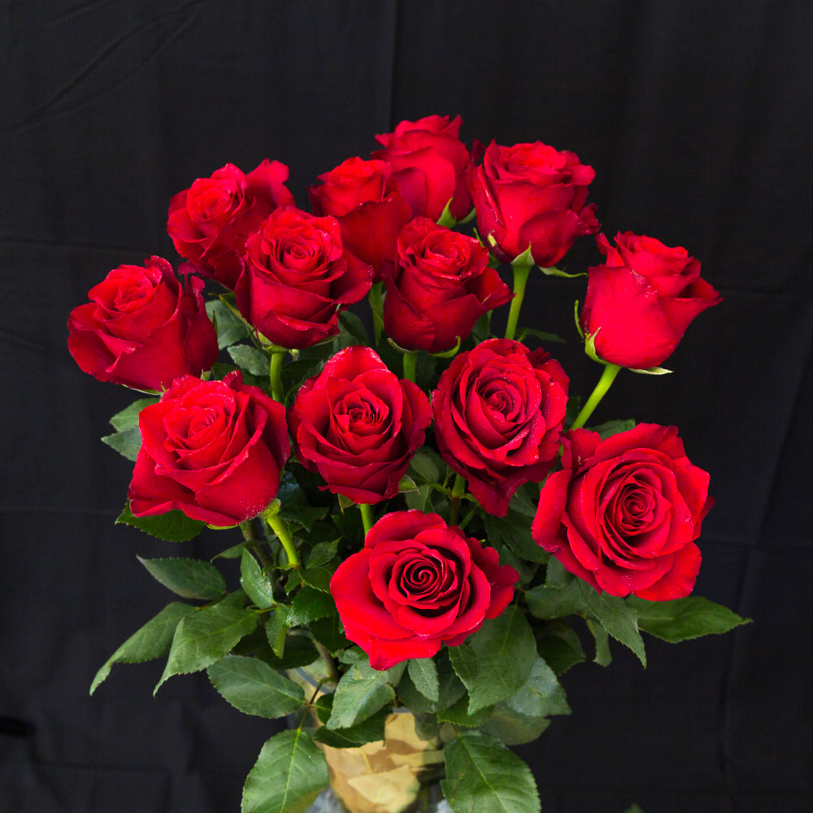
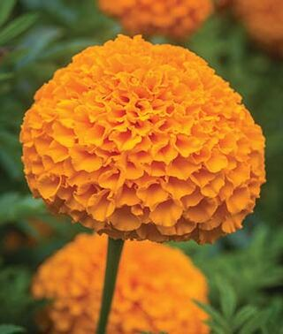
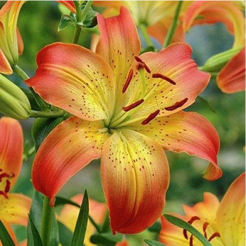
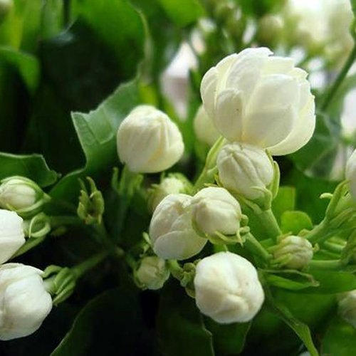
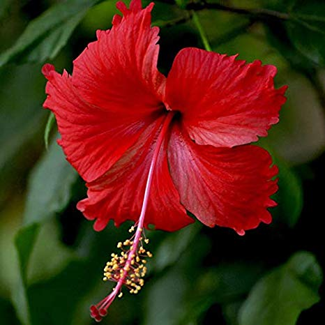
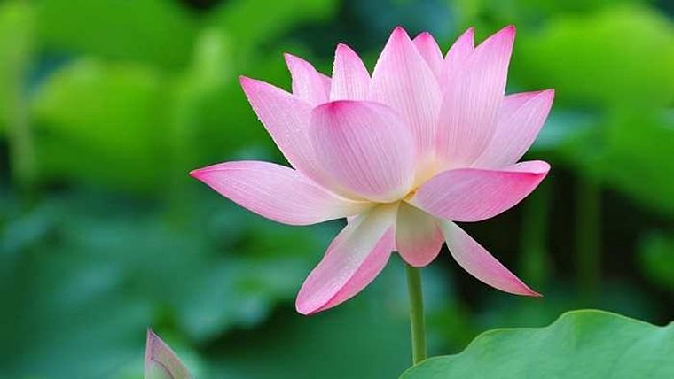

A flower, sometimes known as a bloom or blossom, is the reproductive structure found in flowering plants (plants of the division Magnoliophyta, also called angiosperms). The biological function of a flower is to affect reproduction, usually by providing a mechanism for the union of sperm with eggs. Flowers may facilitate outcrossing (fusion of sperm and eggs from different individuals in a population) or allow selfing (fusion of sperm and egg from the same flower). Some flowers produce diaspores without fertilization (parthenocarpy). Flowers contain sporangia and are the site where gametophytes develop. Many flowers have evolved to be attractive to animals, so as to cause them to be vectors for the transfer of pollen. After fertilization, the ovary of the flower develops into fruit containing seeds.
|

A rose is a woody perennial flowering plant of the genus Rosa, in the family Rosaceae, or the flower it bears. There are over three hundred species and thousands of cultivars. They form a group of plants that can be erect shrubs, climbing, or trailing, with stems that are often armed with sharp prickles |

Tagetes is a genus of annual or perennial, mostly herbaceous plants in the sunflower family. It was described as a genus by Carl Linnaeus in 1753. The genus is native of south of México, but some species have become naturalized around the world. |

Lilium is a genus of herbaceous flowering plants growing from bulbs, all with large prominent flowers. Lilies are a group of flowering plants which are important in culture and literature in much of the world. |
|

Jasminum sambac is a species of jasmine native to tropical Asia, from the Indian subcontinent to Southeast Asia. It is cultivated in many places, especially across much of South and Southeast Asia |

Hibiscus is a genus of flowering plants in the mallow family, Malvaceae. The genus is quite large, comprising several hundred species that are native to warm temperate, subtropical and tropical regions throughout the world. |

Nelumbo nucifera, also known as Indian lotus, sacred lotus, bean of India, Egyptian bean or simply lotus, is one of two extant species of aquatic plant in the family Nelumbonaceae. It is often colloquially called a water lily. |